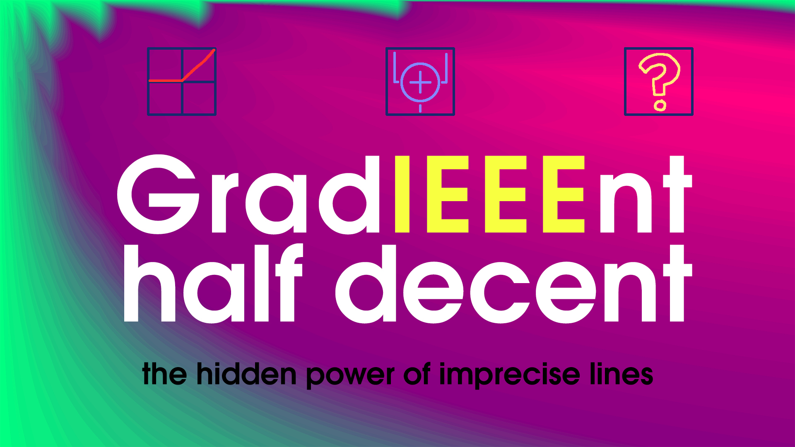

Like reading? Well search no further! This extended technical report contains many words, arranged in a novel order. Appears in the highly selective proceedings of SIGBOVIK 2023.
Like watching a "movie"? Concerned that many "movies" are too relatable? Not enough bonus digressions? Not enough esoteric computer science? Well search no further! This educational film might as well be an entry in the Tom Academy series, but barely qualifies for the Main Sequence due to the carefully planned skits:
Do you like a directory full of source code written during some kind of fever dream, with no documentation? Then check this out!
Of course, there are multiple unsettling videos on my YouTube channel
Suckerpinch!

Please leave a comment on my blog or on Twitter at @tom7!
Get all Tom 7 thingos at → [tom7.org]